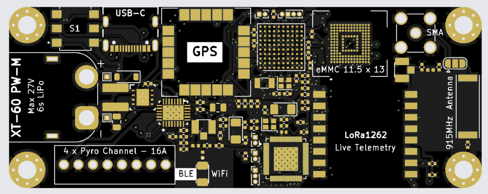
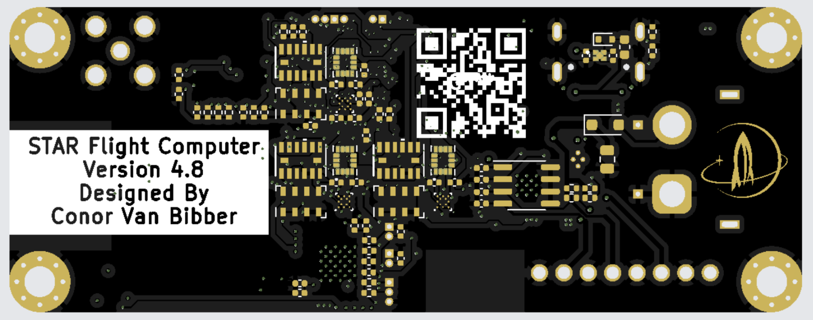

FLIGHT COMPUTER



Thank you very much to JLCPCB for sponsoring this board, as without JLCPCB support, fabrication, and assembly, this project would not have been possible.
The flight computer is a revolutionary amateur rocketry flight computer which offers superior performance for a lower price when compared to the Telemega or Blue Raven, the industry’s leading flight computers. This flight computer features full datalogging and live telemetry capabilities with 13 sensors (1 x GNSS, 3 x Barometer, 6 x Accelerometer, 3 x Gyroscope) with advanced sensor fusion and extended kalman filtering.
This project combines my existing knowledge of high frequency and RF pcb design to create a very compact flight computer (3.25 x 1.25 inches) which surpasses all commercially available alternatives in terms of safety, reliability, and features for a fraction of the cost. The flight computer prioritizes safety by implementing 256 bit encryption for all wireless protocols, failsafe procedures, ESD protection, battery over/under voltage protections, and industry standard triple modular redundancy.
Modularity was a key focus for this project, as it is intended to be able to perform complex control tasks such as active fin stabilization / control, thrust vectoring, liquid engine motorized valve actuation, and solenoid locking pin actuation, among many other applications, using several “hat” boards which can stack onto the flight computer to allow intercommunication via the I2C bus and provide enhanced functionality. Additionally, several flight computers can be stacked on top of each other to increase redundancy and provide further fault tolerance. WiFi and bluetooth are implemented for arming the rocket using a phone, rather than the more dangerous traditional way of listening for a buzzer within the rocket, and 915mhz live telemetry allows for bidirectional communication between the flight computer and ground station to send commands and receive data.
The flight computer enters a sleep mode on startup to conserve power, the sleep mode can be deactivated through the ground station sending a 64 byte arming code which includes important initial conditions like local gravitational acceleration, target apogee, accelerometer axis mapping coefficients, dry mass, and quaternion initial states. Several “Pyro Channels” are implemented as high side power switching circuits capable of resistive and inductive loads with dual redundancy and continuity and resistance detection, specifically for igniting black powder charges to separate parts of the rocket and deploy parachutes. eMMC storage is featured as a compact method of storing up to 256GB of data in a cheap and fast 4-bit interface, and all data can be accessed after flight via the USB-C port which also provides convenient programming access to the two dual core microcontrollers (ESP32-S3 + STM32H747). In the future I would like to implement further error detection and correction and security measures, including dynamic SHA 512 encryption using the onboard cryptographic hash processor, rather than a hardcoded 256 bit encryption key, hamming codes like parity bits or possibly just repetition if the bus can handle significantly higher data rates.